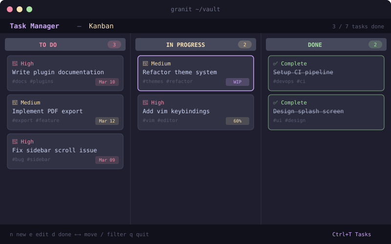

Showcase
Built for how you work.
A deeper look at what makes Granit different.

A real editor, in your terminal.
Syntax-highlighted Markdown with multi-cursor, wikilink autocomplete, Ghost Writer AI, and rendered view mode with Mermaid diagrams.
- Multi-cursor editing with Ctrl+D
- Ghost Writer: inline AI suggestions (Tab to accept)
- 18 built-in snippets and bracket auto-close
- Rendered view mode with callouts and diagrams

█ Task Manager\n Today Upcoming All Kanban Matrix\n ──────────────────────\n > [x] Ship v2.0 release ███ high\n [ ] Write documentation ~2h\n [ ] Review PRs 📌\n [ ] Deploy staging snoozedTasks, goals, and plans. Unified.
7 task views, goal manager with milestones and reviews, daily planner with clipboard export, and Eisenhower Matrix.
- Subtasks, dependencies, snooze, and templates
- Recurring tasks auto-create on completion
- Goal-to-task linking with progress tracking
- Copy daily plan to clipboard for your team
- Search Everything with Ctrl+/